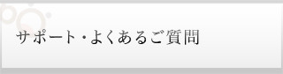
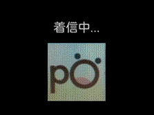
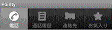

- トップ
- >
- サポート・よくある質問

サポート
- ✉「お問い合わせフォーム」
- ☎ 022-723-0722（9:00～20:00 /365日）
- ※お電話はたいへん込み合いますので、極力お問い合わせフォームをご利用ください。
マニュアルダウンロード
動画マニュアル
pointyのインストールや使い方について、動画でわかりやすく説明しています。
open/close
基本的な使い方
よくあるご質問
- アプリをスマートフォンから削除すれば、解約になりますか？
- いいえ。解約のお手続きは、マイページからお願いします。上部メニューの「ご利用中の方（ログイン）」からお入りください。
- 料金の支払い方法は？
- クレジットカードのみとなります。
- 複数の端末で使えますか？
- はい、ご利用いただけます。ただし、最後にログインした端末だけが有効となります。
- pointyが起動していなくても、着信できますか？
- 起動していない場合、および明示的にログアウトした場合は、発着信ができません。pointyが起動しているかどうかは、スマートフォンの左上に小さな丸いアイコン があるかどうかでわかります。明示的にログアウトする場合は、pointyを起動後に端末下の「メニュー」ボタンを押すと、「ログアウト」ボタンが表示されますので、それをタップしてください。再度ログインする場合は、同じく「メニュー」ボタンを押すと、「ログイン」ボタンが表示されます。
カテゴリから探す
契約・解約について
- 最低利用期間のしばり、違約金はありますか？
- 2013年3月21日現在、最低利用期間をもうけたコース設定は行っておらず、違約金の設定もありません。
- 申し込んで品質に不満がある場合、すみやかに解約できますか？ その場合、費用はかかりますか？
- マイページから、かんたんに解約いただけます。解約時には、下記の費用がかかります。
【月額基本料】ご契約当月は無料ですので、当月末までに解約が正常に受理された場合はかかりません。２か月目以降の解約の場合、ご解約が正常に受理された月の月額基本料は、満額かかります。
【通話料】どの月においても、お話しになった分の満額をご負担いただきます。
【ユニバーサル利用料】どの月においても、１番号あたり3.24円かかります。
なお解約については、毎月25日までに、マイページより正しく解約手続きが完了した場合、最短で当月末でのご解約となります。
- 解約前にスマートフォンからアプリを削除しました。それでも解約できますか？
- 解約手続きは、Web上のマイページからの申請のみを受け付けており、アプリの削除とは無関係です。マイページより正規の手続きをお願いします。
- 解約した場合、アプリの内容は削除されますか？
- いいえ。スマートフォン側でアプリのアインストールをおこなわない限り、アプリの内容は保持されますが、発着信や留守番電話等の機能は利用いただけなくなります。
- 解約したあと再契約したら、同じ電話番号が持てますか？
- いいえ。番号の再利用はできません。
- 解約を申し込んだ場合、回線はいつ止まりますか？
- 毎月25日までに、マイページより正しく解約手続きが完了した場合、最短で当月末での停止となります。26日以降にお手続きが完了した場合は、最短で翌月以降の停止となります。
- 利用中の050番号は変更できますか？
- いいえ、できません。どうしても変更が必要な場合、申し訳ありませんが一度旧契約を解約し、新規であらためてお申し込み手続きをお願いいたします。
- 住所や連絡先はどこで変更すればいいですか？
- 各種お手続きは、マイページからお願いします。
- マイページのIDやパスワードを忘れました。どうしたらいいですか？
- ログインページに再送機能がありますので、ご利用ください。各ページの上部右上、 のボタンからもご利用いただけます。
- 現在のパスワードは変更できますか？
- マイページから可能です。
- 契約時に、好きな番号を選べますか？
- ５つの番号を自動表示しますので、そのなかから一つ選ぶことになります。完全に自由な選択はできません。
- 何契約までできますか？
- お一人（あるいは一法人）につき、最大10契約までとさせていただいております。それを超える場合は審査が必要になりますので、別途お問い合わせください。
- MNP転入（転出）は可能ですか？
- 050番号に対するMNP転入（転出）はできません。
- 契約後、どれくらいで開通しますか？
- 正常に手続きが完了したあと、10分程度でご利用いただけます。
カテゴリから探す
ポイント制度について
- ポイントに有効期限はありますか？
- ありません。pointyのポイントはすべてエルネポイントとして貯まりますので、エルネを退会されないかぎり継続します。
- 現在何ポイントか、確認するにはどうしたらいいですか？
- pointyマイページから、先月末時点での獲得ポイント数を確認できます。
- ポイントを商品券などに換えたり、通話料に充当するにはどうしたらいいですか？
- ポイントに関する操作は、すべてエルネのマイページより行います。
- エルネを退会したら、ポイントも消滅しますか？
- はい。退会と同時に、ポイントに関するすべての権利を失います。
- エルネを継続してpointyだけを解約したら、ポイントはどうなりますか？
- エルネの会員である限り、ポイントはそのままご利用いただけます。
- pointy契約時にエルネには登録しませんでした。途中からエルネに登録することはできますか？
- 可能ですが、未登録期間のポイントをさかのぼって付与することはできません。また、エルネ会員番号と、pointy契約番号の関連付けが必要になりますので、下記の情報をお問い合わせフォームよりお送りください。
pointyご契約者名
pointy電話番号
エルネ会員番号
- pointyを解約したら、エルネも自動的に退会になりますか？
- いいえ。ポイント保護の観点から、エルネの退会は自動連動では行われません。エルネも退会したい場合は、別途エルネのマイページよりお手続きください。
- １ポイントは何円相当ですか？
- １ポイント＝0.1円となります。
- エルネにログインするにはどうしたらいいですか？
- こちらから、ご登録時のIDとパスワードをご入力ください。
カテゴリから探す
料金について
- 海外から発信する際の料金はどのようになりますか？
- 国内の通常料金と同一（固定電話へは8.6円/3分、携帯電話へは16.2円/分）です。ただし、パケット料金につきましては、ご契約いただいている携帯キャリアの利用料が発生する場合があります。海外のパケット料金は高額になることが多いため、お使いの携帯電話キャリアにて海外パケット定額制か、ホテルや飲食店等の無料WiFiをご利用になることをお勧めします。
- 利用料金、利用状況はどこで確認したらいいですか？
- マイページよりご確認いただけます。
- 留守番電話を聞くには、通話料が発生しますか？
- いいえ。pointyアプリ経由でお聞きいただきますので、通話料は発生しません。
- pointyから発信した通話が、24時間無料となる先はどこですか？
- pointyのアプリ同士の通話のみ、無料です。
- pointyの料金にはパケット通信費が含まれていますか？
- いいえ。パケット通信費はお客様のご負担となります。
- pointyへの着信には課金されますか？
- いいえ。着信の場合、pointy側で料金は発生しません。ただし、着信するためにはなんらかのインターネット通信が必要になりますので、ご利用端末のインターネット通信に必要な料金（携帯キャリアのパケット通信費、無線LANやWiFi通信のための費用等）はお客様のご負担となります。
- 契約月の基本料が無料とは、具体的にいつからいつまでですか？
- 正常に契約手続きが完了し、回線が開通した瞬間から、その月の月末深夜0時までの基本料が無料となります。
- リアルタイムで、今月の請求額を確認することはできますか？
- いいえ。請求が確定するのは利用翌月の上旬となりますので、マイページで確認できる請求額は、つねに「先月利用分＝今月支払予定額」、となります。
- 同じクレジットカードで、複数の契約の支払いができますか？
- はい、可能です。ただし不正利用を防止するため、当社基準によりご利用を制限させていただく場合があります。
- 請求書を郵送してもらえますか？
- 申し訳ありません。低価格での提供を徹底するため、請求書の発行は行っておりません。マイページの請求明細は公式な経理資料となりますので、どうしても書面が必要な場合は、プリントアウトしてご利用ください。
- デビッドカードで申し込むことはできますか？
- いいえ。ご利用は、クレジットカードのみとなります。
- 月額基本料の日割り計算はありますか？
- いいえ。ご契約月（無料）、ご解約時（月末までの満額）、いずれも日割り計算は行いません。
- 契約後の初回請求はいつになりますか？
- ご利用のクレジットカードによりますので、各カード会社に確認ください。
カテゴリから探す
機能・操作方法について
- アプリから発信した場合、相手にはどんな番号が表示されますか？
- 国内では、pointyの050番号が表示されます。海外では、pointy電話番号は表示されません。
- LTEやWiMAXなど、高速な通信環境でも利用できますか？
- はい。インターネットにつながる環境なら、原則としてどこでもご利用いただけます。ただし、社内LANや無料WiFi、一部のISPなどでは、セキュリティーを強化するためにポート制限等の通信制限をおこなっている場合があり、pointyがご利用いただけない場合もあります。
- 携帯電話の機種変更を行いました。これまでどおり、pointyは使えますか？
- はい。あたらしい端末にpointyアプリをインストールし、IDとパスワードを入力すれば、同じ050番号でご利用いただけます。
- SIMフリー端末でもpointyは利用できますか？
- はい。Android2.3以上のスマートフォンで、インターネット通信が可能であれば、原則としてご利用いただけます。当社で動作確認が取れているもの、あきらかに不具合が見つかっているものは、下記に掲載しています。
- 推奨機種、非対応機種のいずれにも掲載されていない端末を使用しています。pointyは利用できますか？
- Android2.3以上のスマートフォンで、インターネット通信が可能であれば、原則としてご利用いただけますが、必ずしも動作を保証するものではありません。ご心配の場合は、契約初月は基本料が無料ですので、正規の手続きでご契約いただき、お試しください。ただし、その場合のテスト通話料、パケット通信費等はお客様のご負担となります。
- iPod touchやiPadでも使えますか？
- はい。iOS5.0以上でご利用いただけます。
- Windows Phoneでも使えますか？
- いいえ。Windows Phone対応は今のところ未定です。
- 転送機能はありますか？
- はい、月額108円（税込）にてご利用いただけます。
マイページの「オプションメニュー」から「オプションの追加申込」にて「自動転送」を選択してください。「オプション追加ボタン」にて登録の上、 pointy利用携帯端末から「*72#（転送先電話番号）」 にダイヤルいただき転送設定が完了になります。
自動転送設定解除する方法は、pointyマイページより「オプションメニュー」から「オプションの解約」にて「自動転送」を選択してください。「オプション解約ボタン」にて解約の上、pointy利用携帯端末から「*73 」にダイヤルいただき転送設定が解除されます。
- pointyアプリをダウンロードするには、どうしたらいいですか？
- お手持ちのスマートフォンで、GooglePlayから「通話アプリpointy」で検索し、インストールください。なお、Googleアカウントをお持ちで、PCとスマートフォンの両方でご利用になっている場合は、上記PC画面上から「インストール」ボタンを押すと、スマートフォンにGoogleからインストール案内通知が届き、便利です。
- エルネからメールが届くのですが、止められませんか？
- 申し訳ありませんが、エルネの入会条件となっていますので、お止めすることはできません。
- 通話品質を無料体験する方法はありますか？
- 申し訳ありませんが、正規のご契約が必須となっております。
- pointyでの通話中に、pointyへ着信があったらどうなりますか？
- 通常の「話し中」の状態となります。相手には、話中であるため留守番電話にメッセージを残すようアナウンスが流れ、pointyには不在着信履歴が残ります。
- pointyでの通話中に、携帯電話へ着信があったら、どうなりますか？
- pointyの通話は強制的に保留となり、携帯電話への着信が優先されます。それまでpointyで話していた相手には、「ツー・ツー」という話中音が流れます。その方が切らずに待っていれば、携帯電話での通話を終了すると、自動的にpointyの画面にもどりますので、左側の通話の再開ボタン を押すと、pointyでの通話が再開されます。（2013年3月21日現在、auのみ通信方式の仕様により、話中音が流れません）
- 携帯電話での通話中に、pointyへの着信があったら、どうなりますか？
- 携帯電話での通話が優先されますので、pointyへ電話した方は「応答なし」（なんらかの理由で相手が電話に出ない状態）となります。携帯電話での通話が終了すると、お客様のpointyには不在着信の履歴が残されます。
- 留守番電話機能を使うには、設定や手続きが必要ですか？
- いいえ。標準サービスとして、無料でお使いいただけます。
- 特定番号への着信拒否機能はありますか？
- ありません。
- pointyアプリが起動していない状態、あるいはログアウトした状態で着信があったら、どうなりますか？
- 留守番電話が応答します。休日や夜間で着信してほしくない場合には、ログアウトしてください。
- 複数の端末にpointyを設定していると、どうなりますか？
- どの端末でもご利用いただけますが、最後にログインした端末だけが発着信可能となります。
- pointyの050番号を確認するには、どうしたらいいですか？
- pointyアプリを起動させ、端末のメニューボタンを押すと、「pointyについて」というボタンが表示されますので、それを押してください。
- 留守番電話の内容を聞くにはどうしたらいいですか？
- pointyアプリを起動し、下の留守番電話のボタン を押してください。
- マナーモードはありますか？
- 端末のマナーモード機能をご利用ください。
- pointyに着信しているのか、携帯電話に着信しているのか、見分ける方法はありますか？
- はい、着信時の下記表示画面で識別可能です。

- 電話をかけることのできない通話先はありますか？
- A 下記へは発信できません。
- (1) 緊急通報（110番/119番）、3桁番号(104/115/117/177等）、市外局番+117（地域の天気予報）、
- (2) 衛星船舶電話等への通話
- (3)「0033-010-国番号」または「010-国番号」以外のダイヤル手順により発信された国際通話
- (4) 下記からはじまる番号
002、003、004、005、006、007（00770は除く）、008、009、0010 (001010は除く)、010-800、0120、0140、0160、
0170、0180、0190、020、030、040、0570、060、0800、091、0990、#、* - (5) その他、KDDIと接続協定を結んでいない事業者への通話
- 「お気に入り」とは何ですか？
- 通話頻度の高い相手先を自動的に登録し、かんたんに電話できるようにする、便利な機能です。
- 「お気に入り」に、手動で登録するにはどうしたらいいですか？
- 「お気に入り」を表示中に端末のメニューボタンを押し、「連絡先を新規登録」をタップしてください。Google側の連絡先に登録をおこなえば、「お気に入り」にも表示されるようになります。
- 「連絡先」に追加するにはどうしたらいいですか？
- 「連絡先」を表示中にメニューボタンを押し、「連絡先を新規登録」をタップしてください。Google側の連絡先に登録をおこなえば、「お気に入り」にも表示されるようになります。
- 「連絡先」の最大登録件数は何件ですか？
- 制限はありませんが、1,000件を超えると動作が重くなる場合があります。
- ハンズフリー機能はありますか？
- いいえ、ありません。
- ポーズダイヤル（時間差で番号を自動送信する）機能はありますか？
- いいえ、ありません。
- 通話中に番号のプッシュ操作を行いたいのですが、キーパッドから入力するにはどうしたらいいですか？
- A 通話中に、画面に表示されているキーパッド をタップすると、キーパッドで入力できるようになります。
- pointyを使用中に、他の電話アプリを使うとどうなりますか？
- 無音、音の震え、混入など、正常な通話ができなくなりますので、どちらか一方のみを立ち上げてお使い下さい。
- pointyをインストールしていると、他の電話アプリ、無料通話アプリ等のインストールに影響はありますか？
- 各アプリは独立していますので、原則として、それぞれインストール可能です。ただし、同時に起動すると無音、音の震え、混入などが発生し、正常な通話がおこなえなくなりますので、１回の通話へはどれか１本だけをご利用ください。
- SDカードへアプリのデータを移すことは可能ですか？
- 可能ですが、SDカードへアプリを移動した場合、自動的に起動しないなど正常に動作しなくなりますので、ご注意ください。
- 着信音を変更することはできますか？
- アプリ側ではできませんが、Androidの機能を使えば可能です。Androidの「設定」→「音」→「着信音」からお好みのものをお選びください。
- 契約中の端末をなくしてしまったので、pointyの利用を一時的にできなくしたいのですが、方法はありますか？
- 「お問い合わせ」より、停止の依頼をお送りください。当社にて対応させていただきますが、実際に停止されるまでの間に通話があった場合、その通話に対しても料金は発生しますので、端末の管理は自己責任にてお願いします。
- マナーモードにしたり、通常着信に戻したりするには、どうしたらいいですか？
- 端末本体に連動していますので、本体の機能で設定ください。
- スマートフォンを起動した時に自動でアプリも起動します。アプリを自動的に起動させない方法はありますか？
- ありません。アプリは常に自動起動しますので、終了させたい場合は、端末の「ホーム」ボタンを長押しし、タスクマネージャから手動で終了させてください。
- 通話中に保留にするには、どうしたらいいですか？
- 通話中の画面左側に「||」のボタンが出ていますので、それを押してください。再開させる場合は、同じボタンが「▽」に変わっていますので、それを押してください。
- 留守番電話の保存日数や最大件数、録音時間の制限はどうなっていますか？
- 留守番電話は、最大60秒☓10件の保存が可能です。保存日数の制限はありません。
- 留守番電話の最大登録数10件を超えたら、どうなりますか？
- 新規メッセージをお預かりできない旨のアナウンスが流れ、電話は切れます。聞き終わったメッセージは、適宜削除をお願いします。
- 携帯電話や固定電話から、pointyの留守番電話を聞くことはできますか？
- いえ、できません。pointyは、留守番電話へアクセスがある際、契約番号からの正規アクセスであるかチェックする仕組みが働きますので、ご契約中のpointyからしかお聞きいただけません。
- 3G/LTE回線で通話中にWiFiが使えるエリアに移動しました。そのまま通話を続けることは可能ですか？
- はい、可能です。端末側で正しくWiFi優先の設定がされていれば、自動的に通話はWiFiに切りかわります。その際、短時間無音状態になることがあります。また、WiFiエリアから出た場合も、自動的に3G/LTEでの接続にもどります。ただし、電波状態によっては、この自動切り替えがうまくいかない場合もあります。
- 解約した端末からでも使えますか？
- 携帯電話キャリアで解約した端末、中古ショップ等で購入した旧機種、SIMフリー端末などでも、Android 2.3以上が搭載されており、本体に電話の機能が内蔵されている場合は、インターネット接続を可能にするあらたなSIMをご挿入いただくか、WiFi環境があれば、原則としてご利用いただけます。（2013年3月21日現在、タブレットには対応しておりません）
- 着信しているのに着信画面が表示されず、電話を受けることができません。
- 着信している際にホームボタンや電源ボタン等を押してしまうと、着信画面が表示されない場合があります。このような時は、画面最上部の通知バー を押したまま下にスライドし、通知トレイの「pointy着信中」をタップしてください。
- 通話中に画面操作しようとしても、画面が黒くなってしまいタッチしても反応がありません。
- スマートフォンでは、ほほや耳などが画面に触れて誤動作をしない様に、通話中は電話機上部を顔や手で覆うと画面が暗転する仕組みになっています。手などでセンサーを隠さない様に注意して画面操作をしてください。また、暗転された画面を表示させたいときは、電話機上部に手をかざしたり、外したりしてください。
なお、ホーム画面等から、最上部の通知バー を押したまま下にスライドし、通知トレイの「pointy着信中」をタップしても、呼び出すことが可能です。
- 通話中に突然相手側の声が聞こえなくなりました。どうしたらいいですか？
- 通話中にほほや耳などで保留キーを押してしまうと、相手の声が聞こえなくなり、
- 相手側には保留中を示す電子音が聞こえます。画面を見て「保留中」と表示されていたら、再開ボタン を押してください。
- 電話を発信する際にアプリを選択する画面が表示されず、いきなり別のアプリケーションで発信されます。どうしたらいいですか？
- pointy以外のダイヤルパッドを使って発信すると、アプリの選択画面が表示されない場合があります。このような場合は、アプリケーションの一覧からpointy を実行して発信してください。あるいは画面最上部の黒いバー部分を押したまま下に引き下げる（スライドダウン）すると、「進行中」メニューのなかにpointyがでてきますので、それをタップください。
- pointyのダイヤラ―が表示中であること（つまり、pointyから電話をかけようとしていること）を、どうやって確認できますか？
- ダイヤル画面左上  に「pointy」と表示されているか、ごらんください。また、pointyのダイヤラ―は固有のデザインですので、慣れてくるとすぐに端末本体のダイヤラ―と区別できます。
- 電話をかける際に、pointyではないアプリケーションに対して、「いつもpointy以外の電話を使う」を選択してしまいました。どうしたら解除できますか？
- 「設定」→「アプリケーション」→「アプリケーションの管理」から、解除したいアプリケーションを選択して、画面下方の「設定を消去」ボタンをタップします。
- 通話相手から、自分の声がエコーして聞こえる、と言われます。
- スピーカーからの相手の声を、マイクが拾ってしまうことがあります。マイクやスピーカーの音量を調節して下さい。
- pointyだけを再起動するには、どうしたらいいですか？
- 「設定」→「アプリケーション」→ 「アプリケーションの管理」でpointyを選択後、「強制停止」ボタンを押してください。その後、アプリ一覧などから、pointyのアイコンをタップすると、再度pointyが起動します。
- 画面がOFFになるとWiFiが切断してしまい、3G/LTE接続になってしまいます。つねにWiFi接続モードにするには、どうしたらいいですか？
- 「設定」→「無線とネットワーク」→「WiFi設定」→「詳細設定」→「WiFiのスリープ設定」で、「スリープにしない」を選択しておくと、常にWiFi通信を有効にしておくことができます。
- pointyにログインしようとしても、ログイン画面が表示されません。
- ネットワークに接続していない場合、サーバーに接続できないので、ログイン画面も表示されません。ネットワークに接続してから、お試しください。
※ネットワークに接続できていない場合、画面上部の通知バーのpointyのアイコンは、矢印が丸くぐるぐる回った状態になっています。
カテゴリから探す
海外利用について
- 海外に電話をかける手順を教えてください。
- 海外へは、以下の形式でダイヤルしてください。
010 + 国番号 + 国内番号(頭に”0”がある場合は、”0”をとって)
＜例＞ カナダ国内電話番号[613-483-XXXX]へ発信の場合； 010-1-613-483-XXXX
韓国国内電話番号[ 02-739-XXXX]へ発信の場合； 010-82-2-739-XXXX - 海外から発信する際の料金はどのようになりますか？
- 国内の通常料金と同一（固定電話へは8.6円/3分、携帯電話へは16.2円/分）です。ただし、パケット料金につきましては、ご契約いただいている携帯キャリアの利用料が発生する場合があります。海外のパケット料金は高額になることが多いため、お使いの携帯電話キャリアにて海外パケット定額制か、ホテルや飲食店等の無料WiFiをご利用になることをお勧めします。
- 利用できる国や地域を教えてください。
- インターネットにつながりさえすれば、原則として、どの国や地域からでもご利用いただけますが、下記の点はご留意ください。
- ・大量破壊兵器や通常兵器の開発などに用いない
- ・使用している暗号技術について、口頭で現地国の人に説明しない
- ・個人利用のみとし、他人への譲渡や貸し出しを行わない
また、つぎの項目のように、明確に制限のある場合もございますので、ご利用はお客様の自己責任にてお願いします。
- 利用が制限されている国や地域を教えてください。
- 2013年3月21日現在、制限が判明している事例です。このほかにも、国内外の法律によりさまざまな規制がありますので、詳細はお客様ご自身で確認のうえ、自己責任にて利用ください。
- ・利用は可能だが持ち込み台数の制限がある
インドネシア、イスラエル、韓国 - ・利用は可能だが持ち込み期間の制限がある
中国(香港・マカオを除く)、インド - ・利用は可能だが持ち込み期間の制限がある
マレーシア
- ・利用は可能だが持ち込み台数の制限がある
カテゴリから探す
その他
現在、項目がありません。